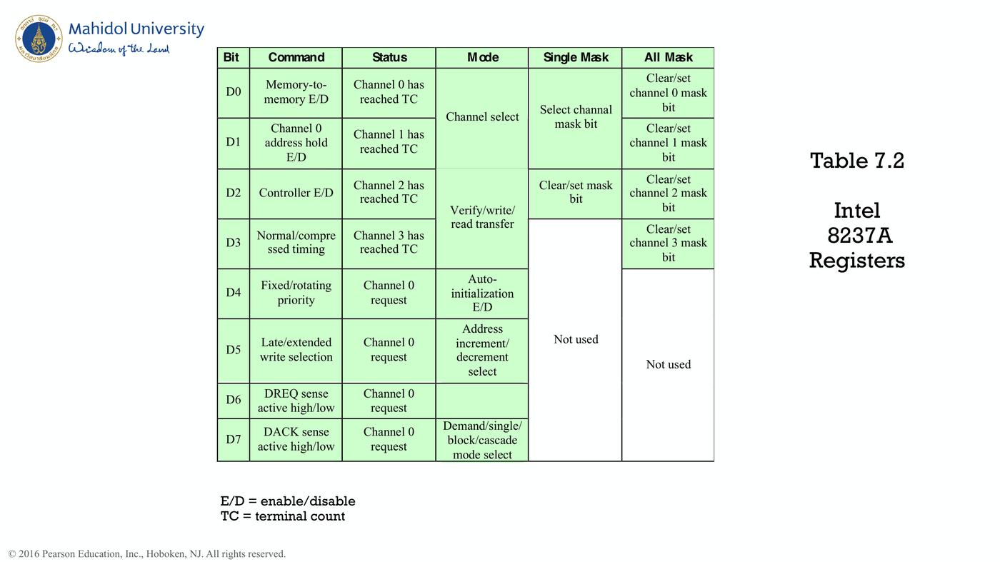

ภาพรวมบทนี้: CPU คุยกับอุปกรณ์ภายนอก (keyboard, disk, network ฯลฯ) ผ่าน I/O module บทนี้อธิบายว่า I/O module ทำหน้าที่อะไร และมี 3 เทคนิค ในการรับส่งข้อมูล: Programmed I/O, Interrupt-driven I/O, DMA
ต่อด้วยการระบุอุปกรณ์ที่ขอ interrupt, ชิปตัวอย่างของ Intel (82C59A, 8255A, 8237A), Direct Cache Access (DCA/DDIO) สำหรับ network ความเร็วสูง, วิวัฒนาการของ I/O, I/O channel
ท้ายบทมี Assignment กลุ่ม 9 หัวข้อ (USB, FireWire, SCSI, Thunderbolt, InfiniBand, PCI, SATA, Ethernet, Wi-Fi) และระบบ I/O ของ IBM zEC12
1. I/O Module และ External Devices (สไลด์ 3–5)
1.1 Generic Model of an I/O Module (สไลด์ 3)
I/O module ต่ออยู่กับ System Bus (Address Lines, Data Lines, Control Lines) ด้านหนึ่ง และมี links to peripheral devices อีกด้านหนึ่ง
1.2 External Devices (สไลด์ 4)
- ใช้แลกเปลี่ยนข้อมูลระหว่างสภาพแวดล้อมภายนอกกับคอมพิวเตอร์
- ต่อกับคอมพิวเตอร์ผ่าน link ไปยัง I/O module
- 3 ประเภท:
| ประเภท | ความหมาย |
|---|---|
| Human readable | สื่อสารกับมนุษย์ |
| Machine readable | สื่อสารกับอุปกรณ์ (equipments) |
| Communication | สื่อสารกับอุปกรณ์ระยะไกล เช่น terminal หรือคอมพิวเตอร์อีกเครื่อง |
1.3 Block Diagram of an External Device (สไลด์ 5)
- รับ Control signals จาก I/O module → Control Logic
- ส่ง Status signals ไปยัง I/O module
- Data bits ไป/กลับ I/O module ผ่าน Buffer
- Transducer (ตัวแปลงสัญญาณ) แปลงข้อมูลเฉพาะอุปกรณ์ (device-unique) ไป/กลับจากสภาพแวดล้อม
2. หน้าที่ของ I/O Module (สไลด์ 6–7)
| หน้าที่ | รายละเอียด |
|---|---|
| Control and timing | ประสานการไหลของข้อมูลระหว่างทรัพยากรภายในกับอุปกรณ์ภายนอก |
| Processor communication | command decoding, data, status reporting, address recognition |
| Device communication | commands, status information, data |
| Data buffering | ทำ buffer เพื่อปรับความเร็วระหว่างอุปกรณ์กับ memory ให้สมดุล |
| Error detection | ตรวจจับและรายงาน transmission errors |
Block Diagram of an I/O Module (สไลด์ 7):
- ฝั่ง System Bus: Data Lines ↔ Data Registers และ Status/Control Registers; Address Lines และ Control Lines ↔ I/O Logic
- ฝั่งอุปกรณ์: External Device Interface Logic หลายชุด แต่ละชุดมีสาย Data, Status, Control
3. 3 เทคนิคของ I/O (สไลด์ 8–11)
3.1 เทคนิค (สไลด์ 8)
| เทคนิค | การทำงาน |
|---|---|
| 1. Programmed I/O | processor แลกข้อมูลกับ I/O module โดยรันโปรแกรมที่ควบคุม I/O โดยตรง — สั่งแล้ว ต้องรอจน I/O เสร็จ → ถ้า processor เร็วกว่า I/O module ก็ เสียเวลา processor |
| 2. Interrupt-driven I/O | processor สั่ง I/O แล้ว ทำคำสั่งอื่นต่อ แล้ว I/O module interrupt เมื่อทำงานเสร็จ |
| 3. DMA (Direct memory access) | I/O module กับ main memory แลกข้อมูลกันโดยตรง ไม่ผ่าน processor |
3.2 Summary of I/O Techniques (สไลด์ 9)
| No Interrupts | Use of Interrupts | |
|---|---|---|
| I/O-to-memory transfer through processor | Programmed I/O | Interrupt-driven I/O |
| Direct I/O-to-memory transfer | — | DMA |
3.3 I/O Commands (สไลด์ 10)
เมื่อ processor อ้างถึง I/O module จะส่งคำสั่งได้ 4 แบบ:
- Control — เปิดใช้งาน peripheral และบอกว่าต้องทำอะไร
- Test — ทดสอบสถานะต่าง ๆ ของ I/O module และ peripherals
- Read — ให้ I/O module ดึงข้อมูลจาก peripheral มาไว้ใน internal buffer
- Write — ให้ I/O module นำข้อมูลจาก data bus แล้วส่งไปยัง peripheral
3.4 Three Techniques for Input of a Block of Data (สไลด์ 11)
| (a) Programmed I/O | (b) Interrupt-driven I/O | (c) DMA |
|---|---|---|
| Issue Read command (CPU→I/O) | Issue Read command (CPU→I/O) → Do something else | Issue Read block command to DMA (CPU→DMA) → Do something else |
| Read status (I/O→CPU) | ← Interrupt → Read status (I/O→CPU) | ← Interrupt → Read status of DMA (DMA→CPU) |
| Check status: Not ready → วนอ่าน status ใหม่ / Error condition | Check status / Error condition | Next instruction |
| Ready → Read word from I/O (I/O→CPU) | Ready → Read word (I/O→CPU) | |
| Write word into memory (CPU→memory) | Write word into memory (CPU→memory) | |
| Done? No → วนกลับ / Yes → Next instruction | Done? No → วนกลับ / Yes → Next instruction |
💡 ความต่างสำคัญ: (a) CPU วนเช็ก status เอง | (b) CPU ไปทำอย่างอื่นแล้วรอ interrupt | (c) CPU สั่งครั้งเดียวทั้ง block แล้วรอ interrupt ตอนจบ
4. I/O Instructions และ I/O Mapping (สไลด์ 12–14)
4.1 I/O Instructions (สไลด์ 12)
- ใน programmed I/O คำสั่ง I/O ที่ processor fetch จาก memory สัมพันธ์ใกล้ชิด กับ I/O commands ที่ส่งให้ I/O module
- รูปแบบคำสั่งขึ้นกับวิธี address อุปกรณ์ภายนอก
- แต่ละ I/O device ได้ identifier/address เฉพาะ — คำสั่ง I/O มี address ของอุปกรณ์ → I/O module แต่ละตัวต้องตีความ address lines ว่าคำสั่งเป็นของตัวเองหรือไม่
- Memory-mapped I/O: address space เดียวสำหรับ memory และ I/O devices → ต้องมีแค่ read line 1 เส้น และ write line 1 เส้น บน bus
4.2 I/O Mapping Summary (สไลด์ 13)
| Memory mapped I/O | Isolated I/O | |
|---|---|---|
| Address space | อุปกรณ์และ memory ใช้ร่วมกัน | แยกกัน |
| คำสั่ง | I/O เหมือน memory read/write — ไม่มีคำสั่ง I/O พิเศษ | ต้องมีคำสั่ง I/O พิเศษ |
| สาย | — | ต้องมี I/O หรือ memory select lines |
| ชุดคำสั่ง | มีคำสั่งเข้าถึง memory ให้เลือกมาก | ชุดคำสั่ง จำกัด |
4.3 ตัวอย่าง (สไลด์ 14) — อ่าน keyboard
- Keyboard input data register = address 516, keyboard input status and control register = 517 (bit: 1 = ready, 0 = busy; set 1 เพื่อเริ่มอ่าน)
(a) Memory-mapped I/O:
200 Load AC "1" Load accumulator
Store AC 517 Initiate keyboard read
202 Load AC 517 Get status byte
Branch if Sign = 0 202 Loop until ready
Load AC 516 Load data byte
(b) Isolated I/O:
200 Load I/O 5 Initiate keyboard read
201 Test I/O 5 Check for completion
Branch Not Ready 201 Loop until complete
In 5 Load data byte
5. Interrupt-Driven I/O (สไลด์ 15–17)
5.1 แนวคิด (สไลด์ 15)
- ปัญหาของ programmed I/O คือ processor ต้องรอนานจน I/O module พร้อมรับหรือส่งข้อมูล
- ทางเลือก: processor สั่ง I/O command ให้ module แล้วไปทำงานอื่นที่มีประโยชน์
- I/O module จะ interrupt processor เพื่อขอบริการเมื่อพร้อมแลกข้อมูล
- processor ทำการส่งข้อมูล แล้วกลับไปทำงานเดิมต่อ
5.2 Simple Interrupt Processing (สไลด์ 16)
| ฝั่ง Hardware | ฝั่ง Software |
|---|---|
| 1. Device controller หรือ hardware อื่นส่ง interrupt | 6. Save remainder of process state information |
| 2. Processor ทำคำสั่งปัจจุบันให้เสร็จ | 7. Process interrupt (เริ่มทำงานในส่วนของ interrupt) |
| 3. Processor ส่งสัญญาณ acknowledgment ของ interrupt | 8. Restore process state information |
| 4. Processor push PSW และ PC ลง control stack (เก็บค่า PC, PSW/status register ก่อนไปเริ่มทำงานใน ISR) | 9. Restore old PSW และ PC |
| 5. Processor โหลดค่า PC ใหม่ตาม interrupt |
5.3 Changes in Memory and Registers for an Interrupt (สไลด์ 17)
- (a) Interrupt เกิดหลังคำสั่งที่ตำแหน่ง N: ค่า N+1 (ที่อยู่คำสั่งถัดไป) และ registers ถูก push ลง control stack (stack pointer จาก T เป็น T−M), PC ถูกตั้งเป็น Y (จุดเริ่ม ISR)
- (b) Return from interrupt: ISR จบที่ Y+L (Return) → ดึงค่ากลับจาก stack, PC กลับเป็น N+1, stack pointer กลับเป็น T
6. Design Issues และ Device Identification (สไลด์ 18–19)
6.1 Design Issues (สไลด์ 18)
การทำ interrupt I/O มีคำถาม 2 ข้อ:
- มี I/O module หลายตัว → processor รู้ได้อย่างไรว่าอุปกรณ์ไหนส่ง interrupt?
- ถ้ามีหลาย interrupt → processor เลือกทำตัวไหนก่อน?
6.2 Device Identification — 4 เทคนิค (สไลด์ 19)
| เทคนิค | การทำงาน |
|---|---|
| 1. Multiple interrupt lines | มีหลายสายระหว่าง processor กับ I/O modules — ตรงไปตรงมาที่สุด แต่แม้ใช้หลายสาย แต่ละสายก็มักมีหลาย module ต่ออยู่ |
| 2. Software poll | เมื่อ processor เจอ interrupt จะไปที่ ISR ซึ่ง poll ทุก I/O module เพื่อหาว่าใครส่ง — เสียเวลา |
| 3. Daisy chain (hardware poll, vectored) | สาย interrupt acknowledge ต่อเป็นโซ่ผ่าน modules — module ที่ขอส่ง vector (address ของ I/O module หรือ ID เฉพาะ) |
| 4. Bus arbitration (vectored) | I/O module ต้อง ได้สิทธิ์ควบคุม bus ก่อน จึงยก interrupt request ได้ → processor ตอบทาง interrupt acknowledge line → module ที่ขอส่ง vector (address of I/O) ลง data lines |
- Vectored interrupt: processor ใช้ vector เป็น pointer ไปยัง device-service routine ที่ถูกต้อง โดย ไม่ต้องรัน general interrupt-service routine ก่อน
7. ชิปตัวอย่างของ Intel (สไลด์ 20–23)
7.1 Use of the 82C59A Interrupt Controller (สไลด์ 20)
- Slave 82C59A แต่ละตัวรับ interrupt จาก external devices ได้ 8 ตัว (IR0–IR7) แล้วส่ง INT ไปยัง Master 82C59A
- Master ส่ง INT ไปยัง INTR ของ 80386 processor
- ภาพแสดง external device 00 ถึง 63 (slave หลายตัวต่อเข้า master)
7.2 Intel 8255A Programmable Peripheral Interface (สไลด์ 21)
- Block diagram: Data bus buffer (D7–D0, bi-directional), Read/write control logic (RD, WR, A1, A0, Reset, CS), Group A control → Port A (8) และ Port C upper (4), Group B control → Port C lower (4) และ Port B (8), 8-bit internal data bus
- I/O: PA7–PA0, PC7–PC4, PC3–PC0, PB7–PB0
- Pin layout 40 pins
7.3 Intel 8255A Control Word (สไลด์ 22)
(a) Mode definition (D7 = 1, Mode set flag active):
| Bit | ความหมาย |
|---|---|
| D0 | Port C (lower): 1 = Input, 0 = Output |
| D1 | Port B: 1 = Input, 0 = Output |
| D2 | Mode selection (Group B): 0 = Mode 0, 1 = Mode 1 |
| D3 | Port C (upper): 1 = Input, 0 = Output |
| D4 | Port A: 1 = Input, 0 = Output |
| D6–D5 | Mode selection (Group A): 00 = Mode 0, 01 = Mode 1, 1X = Mode 2 |
| D7 | Mode set flag: 1 = Active |
(b) Bit set/reset ของ Port C (D7 = 0):
- D6–D4: don't care
- D3–D1: เลือก bit 0–7 ของ Port C (000 = bit 0 … 111 = bit 7)
- D0: 1 = set, 0 = reset
7.4 Keyboard/Display Interface to 82C55A (สไลด์ 23)
- Input port (A0–A7): รับจาก KEYBOARD (R0–R5, Shift, Control); C4 = Data ready, C5 = Acknowledge; C3 = Interrupt request
- Output port (B0–B7): ส่งไป DISPLAY (S0–S5, Backspace, Clear); C1 = Data ready, C2 = Acknowledge, C6 = Blanking, C7 = Clear line; C0 = Interrupt request
8. DMA — Direct Memory Access (สไลด์ 24–30)
8.1 ข้อเสียของ Programmed และ Interrupt-Driven I/O (สไลด์ 24)
- อัตราการส่ง I/O ถูกจำกัด ด้วยความเร็วที่ processor ทดสอบและให้บริการอุปกรณ์
- Processor ถูกผูกไว้ กับการจัดการ I/O — ต้องรันหลายคำสั่งต่อการส่ง I/O แต่ละครั้ง
- → เมื่อต้องย้ายข้อมูลปริมาณมาก DMA มีประสิทธิภาพกว่า
8.2 Typical DMA Block Diagram (สไลด์ 25)
DMA module ประกอบด้วย:
- Data count
- Data register (ต่อ Data lines)
- Address register (ต่อ Address lines)
- Control logic — สัญญาณ Request to DMA, Acknowledge from DMA, Interrupt, Read, Write
8.3 DMA and Interrupt Breakpoints During an Instruction Cycle (สไลด์ 26)
- เป็นจุดที่ processor หยุดพักเพื่อตรวจคำขอ (request) จาก DMA และ interrupt
- DMA แทรกได้เร็วและถี่กว่า เพราะเกี่ยวกับ hardware bus โดยตรง ส่วน interrupt ต้องรอจนคำสั่งเสร็จ
8.4 Alternative DMA Configurations (สไลด์ 27)
| แบบ | ลักษณะ |
|---|---|
| (a) Single-bus, detached DMA | Processor, DMA, I/O หลายตัว, Memory อยู่บน bus เดียวกัน |
| (b) Single-bus, Integrated DMA-I/O | DMA รวมกับ I/O หรือ DMA ต่อ I/O หลายตัวเอง |
| (c) I/O bus | DMA ต่อกับ system bus และมี I/O bus แยก ไปยัง I/O หลายตัว |
8.5 8237 DMA Usage of System Bus (สไลด์ 28)
- CPU, 8237 DMA chip, Main memory, Disk controller ต่อกับ Data bus, Address bus, Control bus (IOR, IOW, MEMR, MEMW)
- สัญญาณ: DREQ = DMA request, DACK = DMA acknowledge, HRQ = HOLD request, HLDA = HOLD acknowledge
- ลำดับตามภาพ: Disk controller ส่ง DREQ → 8237 ส่ง HRQ ไป CPU → CPU ตอบ HLDA → 8237 ส่ง DACK ไปยัง disk controller
8.6 Fly-By DMA Controller (สไลด์ 29)
- ข้อมูลไม่ผ่านและไม่ถูกเก็บใน DMA chip
- DMA เฉพาะระหว่าง I/O port กับ memory
- ไม่ใช่ระหว่าง I/O port 2 ตัว หรือ memory 2 ตำแหน่ง
- ทำ memory-to-memory ได้ผ่าน register
- 8237 มี 4 DMA channels — programmed แยกกัน, active ได้ทีละ 1 ตัว, หมายเลข 0, 1, 2, 3
8.7 Intel 8237A Registers (สไลด์ 30)
(E/D = enable/disable, TC = terminal count)
| Bit | Command | Status | Mode | Single Mask | All Mask |
|---|---|---|---|---|---|
| D0 | Memory-to-memory E/D | Channel 0 has reached TC | Channel select (D1–D0) | Select channel mask bit (D1–D0) | Clear/set channel 0 mask bit |
| D1 | Channel 0 address hold E/D | Channel 1 has reached TC | ↑ | ↑ | Clear/set channel 1 mask bit |
| D2 | Controller E/D | Channel 2 has reached TC | Verify/write/read transfer (D3–D2) | Clear/set mask bit | Clear/set channel 2 mask bit |
| D3 | Normal/compressed timing | Channel 3 has reached TC | ↑ | Not used (D3–D7) | Clear/set channel 3 mask bit |
| D4 | Fixed/rotating priority | Channel 0 request | Auto-initialization E/D | Not used | Not used (D4–D7) |
| D5 | Late/extended write selection | Channel 0 request | Address increment/decrement select | Not used | Not used |
| D6 | DREQ sense active high/low | Channel 0 request | Demand/single/block/cascade mode select (D7–D6) | Not used | Not used |
| D7 | DACK sense active high/low | Channel 0 request | ↑ | Not used | Not used |

⚠️ ในสไลด์ ช่อง Status ของ D4–D7 เขียน "Channel 0 request" ซ้ำทั้ง 4 แถว (ไม่ได้ไล่เป็น channel 1–3)
9. Direct Cache Access (DCA) (สไลด์ 31–37)
9.1 ทำไมต้องมี DCA (สไลด์ 31)
- DMA ไม่สามารถ scale ได้ทันกับ data rate ของ network I/O ที่เพิ่มขึ้นมาก
- ความต้องการมาจาก Ethernet switch 10-Gbps และ 100-Gbps ที่รับส่งข้อมูลจำนวนมากกับ database servers และระบบสมรรถนะสูง
- อีกแหล่งคือ Wi-Fi ระดับ gigabit — อุปกรณ์ 3.2 Gbps และ 6.76 Gbps เริ่มแพร่หลาย
9.2 Xeon E5-2600/4600 Chip Architecture (สไลด์ 32)
8 cores (Core 0–7) แต่ละตัวมี L1 (64 KB) และ L2 (256 KB), L3 cache แบ่งเป็นก้อนละ 2.5 MB รวม 8 ก้อน, เชื่อมด้วย ring, มี QPI (ไป processor chip อื่น), PCIe (ไป I/O devices), Memory Controller Hub (ไป DDR3 memory)
9.3 Cache-Related Performance Issues (สไลด์ 33–34)
- Network traffic ส่งเป็นลำดับ packets (protocol data units)
- ระดับต่ำสุด (link) มักเป็น Ethernet — payload คือ packet ของ protocol ที่สูงกว่า
- ระดับสูงกว่ามักเป็น IP (บน Ethernet) และ TCP (บน IP)
- Ethernet payload = ข้อมูล + TCP header + IP header
- ขาออก: Ethernet packet ถูกสร้างใน I/O controller หรือ NIC
- ขาเข้า: I/O controller ตัดส่วน Ethernet ออก แล้วส่ง TCP/IP packet ให้ CPU
- ทั้งขาเข้าและขาออก core, main memory และ cache เกี่ยวข้องทั้งหมด
- ใน DMA scheme (ขาออก): application วางข้อมูลใน application buffer ใน main memory → core ย้ายไป system buffer และสร้าง TCP/IP headers (เก็บใน system memory) → NIC ดึง packet ผ่าน DMA → กิจกรรมนี้ใช้ทั้ง main memory และ cache; ขาเข้าก็ต้องย้ายระหว่าง system buffer กับ application buffer เช่นกัน
9.4 Packet Traffic Steps (สไลด์ 35)
| Incoming | Outgoing |
|---|---|
| 1. Packet arrives | 1. Packet transfer requested |
| 2. DMA | 2. Packet created |
| 3. NIC interrupts host | 3. Output operation invoked |
| 4. Retrieve descriptors and headers | 4. DMA transfer |
| 5. Cache miss occurs | 5. NIC signals completion |
| 6. Header is processed | 6. Driver frees buffer |
| 7. Payload transferred |
9.5 Direct Cache Access Strategies (สไลด์ 36)
- กลยุทธ์ง่ายที่สุด: ทำเป็น prototype บน Intel Xeon หลายรุ่น ระหว่างปี 2006–2010
- ใช้กับ incoming network traffic เท่านั้น
- DCA function อยู่ใน memory controller ส่ง prefetch hint ให้ core ทันทีที่ข้อมูลอยู่ใน system memory
- core จึง prefetch data packet จาก system buffer ได้
- ได้ประโยชน์มากกว่านั้นถ้า เลี่ยง system buffer ใน main memory ไปเลย
- packet และ descriptor ถูก core เข้าถึงใน system buffer ครั้งเดียว
- ขาเข้า core อ่านจาก buffer แล้วย้าย payload ไป application buffer — ไม่ต้องเข้าถึงใน system buffer อีก
- Cache injection: ทำใน Intel Xeon เรียกว่า Direct Data I/O (DDIO)
9.6 Comparison of DMA and DDIO (สไลด์ 37)
| Normal DMA | DDIO | |
|---|---|---|
| ขาเข้า (to memory/cache) | (a) I/O controller → main memory → core อ่าน → ผ่าน last level cache | (b) I/O controller → last level cache โดยตรง → core |
| ขาออก (to I/O) | (c) core เขียน → main memory → I/O controller อ่านจาก main memory | (d) core เขียนใน last level cache → I/O controller อ่านจาก cache โดยตรง |
💡 DDIO ข้าม main memory ไปใช้ last level cache โดยตรง
10. Evolution of the I/O Function และ I/O Channel (สไลด์ 38–39)
10.1 Evolution (สไลด์ 38)
- CPU ควบคุม peripheral โดยตรง
- เพิ่ม controller หรือ I/O module — CPU ใช้ programmed I/O ไม่มี interrupt
- เหมือนขั้น 2 แต่ใช้ interrupt — CPU ไม่ต้องรอ I/O → มีประสิทธิภาพขึ้น
- I/O module ได้ เข้าถึง memory โดยตรงผ่าน DMA — ย้าย block ข้อมูลได้โดยไม่ต้องใช้ CPU ยกเว้นตอนเริ่มและจบ
- I/O module ถูกพัฒนาเป็น processor ในตัวเอง มี instruction set เฉพาะสำหรับ I/O
- I/O module มี local memory ของตัวเอง — เป็นคอมพิวเตอร์ในตัวเอง → ควบคุม I/O devices จำนวนมากได้โดยใช้ CPU น้อยมาก
10.2 I/O Channel Architecture (สไลด์ 39)
| แบบ | ลักษณะ |
|---|---|
| (a) Selector channel | ต่อกับ main memory (data and address channel) และ CPU (control signal path) — มี I/O controllers หลายตัว (แต่ละตัวมีอุปกรณ์) บนสายเดียว |
| (b) Multiplexor channel | Multiplexor channel ต่อ I/O controllers หลายตัว แต่ละตัวมีอุปกรณ์หนึ่งหรือหลายตัว |
11. Assignment และ 9 หัวข้อ Interface (สไลด์ 40–48)
11.1 Assignment (สไลด์ 40)
- กลุ่มละ 6–7 คน แบ่งให้ได้ 9 กลุ่ม 9 เรื่อง — จับฉลากเรื่อง
- ส่ง: เอกสารรายงานสรุป (ใส่ชื่อสมาชิกและรหัส น.ศ. ให้ครบ)
- นำเสนอกลุ่มละ 10–15 นาที ในชั้นเรียนคาบสัปดาห์ถัดไป (8, 10 กันยายน 2569)
11.2 หัวข้อ 1–9
1. Universal Serial Bus (USB) (สไลด์ 41)
- ใช้กว้างขวางเชื่อมอุปกรณ์ต่อพ่วง, เป็น interface ปกติของอุปกรณ์ความเร็วต่ำ, ใช้กับ I/O ความเร็วสูงด้วย, มีหลายรุ่น
| รุ่น | ความเร็ว |
|---|---|
| USB 1.0 | Low Speed 1.5 Mbps, Full Speed 12 Mbps |
| USB 2.0 | 480 Mbps |
| USB 3.0 = USB3.1 (Gen1) = USB3.2 (Gen1) | SuperSpeed (ขนานกับ bus USB 2.0) — signaling 5 Gbps, ใช้ได้จริงถึง 4 Gbps |
| USB 3.1 (Gen2) = USB3.2 (Gen2) | SuperSpeed+ — signaling 10 Gbps, ใช้ได้ตามทฤษฎี 9.7 Gbps |
| USB3.2 (Gen2x2) | 20 Gbps |
- ควบคุมโดย root host controller ต่ออุปกรณ์เป็นเครือข่ายแบบ hierarchical tree topology
2. FireWire Serial Bus (1999–2000) (สไลด์ 42)
- พัฒนาเป็นทางเลือกแทน SCSI สำหรับระบบเล็ก (PC, workstation, server)
- เป้าหมาย: รองรับ I/O rate สูง โดยเลี่ยง I/O channel ที่ใหญ่และแพงของ mainframe/supercomputer
- IEEE 1394 High Performance Serial Bus
- Daisy chain ต่ออุปกรณ์ได้ 63 ตัว จาก port เดียว, เชื่อม FireWire bus ได้ 1022 bus ด้วย bridges
- Hot plugging (ต่อ/ถอดโดยไม่ต้องปิดเครื่องหรือ reconfigure), automatic configuration, ไม่ต้องมี terminations และระบบกำหนด address เอง
3. SCSI (สไลด์ 43)
- Small Computer System Interface — เคยเป็นมาตรฐานเชื่อมอุปกรณ์กับคอมพิวเตอร์เล็กและกลาง
- เสียความนิยมให้ USB และ FireWire ในระบบเล็ก แต่รุ่นความเร็วสูงยังนิยมสำหรับ mass memory ใน enterprise
- โครงสร้าง shared bus รองรับ 16 หรือ 32 อุปกรณ์ ตามรุ่น
- ส่งแบบ parallel (ไม่ใช่ serial) — bus กว้าง 16 bit (รุ่นแรก) และ 32 bit (รุ่นหลัง)
- ความเร็ว 5 Mbps (SCSI-1) ถึง 160 Mbps (SCSI-3 U3)
4. Thunderbolt (สไลด์ 44)
- เทคโนโลยีเชื่อมต่อพ่วงที่ใหม่และเร็วที่สุดสำหรับใช้ทั่วไป
- พัฒนาโดย Intel ร่วมกับ Apple
- รวม data, video, audio, power ในการเชื่อมต่อเดียว สำหรับ hard drives, RAID arrays, video-capture boxes, network interfaces
- throughput สูงสุด 10 Gbps ต่อทิศทาง และจ่ายไฟได้ ถึง 10 Watts
5. InfiniBand (สไลด์ 45)
- I/O specification สำหรับตลาด high-end server
- รุ่นแรกออกต้นปี 2001 — IBM zEnterprise mainframes พึ่งพามาก
- อธิบายสถาปัตยกรรมการไหลข้อมูลระหว่าง processors กับ intelligent I/O devices
- นิยมใช้กับ storage area networking และ storage ขนาดใหญ่
- ต่อ servers, remote storage, network devices เข้ากับ central fabric of switches and links
- switch-based ต่อได้ถึง 64,000 อุปกรณ์
6. PCI Express (สไลด์ 46)
- bus ความเร็วสูงสำหรับเชื่อม peripherals หลายประเภทและหลายความเร็ว
7. SATA (สไลด์ 46)
- Serial Advanced Technology Attachment — interface สำหรับ disk storage
- data rate สูงสุด 6 Gbps, สูงสุดต่ออุปกรณ์ 300 Mbps
- ใช้แพร่หลายใน desktop และงาน industrial/embedded
8. Ethernet (สไลด์ 47)
- เทคโนโลยีเครือข่ายแบบสายที่ใช้มากที่สุด
- รองรับถึง 100 Gbps และระยะตั้งแต่ไม่กี่เมตรถึงหลายสิบ km
- เริ่มจากระบบทดลอง bus-based 3-Mbps → เปลี่ยนเป็น switch-based (central switch ที่อุปกรณ์ทุกตัวต่อตรง)
- data rate เพิ่มขึ้นทีละ 10 เท่าเป็นระยะ
9. Wi-Fi (สไลด์ 48)
- เทคโนโลยีเข้าถึง Internet แบบไร้สายที่ใช้มากที่สุด — ต่อคอมพิวเตอร์, tablet, smartphone, กล้อง, TV, thermostat
- ในองค์กรช่วยเพิ่ม productivity, hotspot สาธารณะขยายมาก
- คณะกรรมการ IEEE 802.11 ออกมาตรฐานรุ่นใหม่ที่เร็วขึ้นเรื่อย ๆ
- รุ่นปัจจุบัน (ตามสไลด์) 802.11ac (2014) สูงสุด 3.2 Gbps
12. IBM zEC12 I/O (สไลด์ 49–51)
12.1 IBM EC12 I/O Channel Subsystem Structure (สไลด์ 49)
- ≤ 60 partitions ต่อระบบ, ≤ 15 partitions ต่อ channel subsystem
- แต่ละ partition มี subchannels
- 4 channel subsystems
- ≤ 256 channels ต่อ channel subsystem, ≤ 1024 partitions ต่อระบบ (ตามที่สไลด์เขียน)
⚠️ สไลด์ใช้คำว่า "partitions" ในบรรทัดล่างสุด (≤ 1024) ซึ่งอยู่ใต้ช่องที่เป็น "Channel" — อาจหมายถึง channels ต่อระบบ (4 × 256 = 1024) ควรตรวจกับอาจารย์
12.2 IBM zEC12 I/O Frames — Front View (สไลด์ 50)
ส่วนประกอบที่ชี้ในภาพ: Internal Batteries (optional), Power Supplies, Support Elements, I/O cage Carried Forward, PCIe I/O drawer, Flexible Service Processor (FSP) controller cards, Processor Books with Memory/HCA-and PCIe-Fanout cards, InfiniBand and PCIe I/O Interconnects, N+1 Water Cooling Units
12.3 IBM EC12 I/O System Structure (สไลด์ 51)
- Book 1–4 แต่ละ book มี Memory, PU หลายตัว, SC1/SCO
- Book 1–2 ต่อผ่าน PCIe (8X) → PCIe switches → PCIe I/O Drawer (Fibre Channel controller, 10-Gbps Ethernet controller)
- Book 3–4 ต่อผ่าน HCA2 (8X) → InfiniBand multiplexors → I/O Cage & I/O Drawer (ESCON channels, 1-Gbps Ethernet controller ports)
คำศัพท์สำคัญ
| คำศัพท์ | ความหมาย | จำง่าย ๆ ว่า |
|---|---|---|
| I/O module | ตัวกลางระหว่าง system bus กับอุปกรณ์ | 5 หน้าที่ |
| Transducer | ตัวแปลงสัญญาณ ในอุปกรณ์ภายนอก | |
| Programmed I/O | CPU สั่งแล้วรอเอง | เสียเวลา CPU |
| Interrupt-driven I/O | CPU สั่งแล้วไปทำอย่างอื่น รอ interrupt | |
| DMA | I/O ↔ memory โดยตรง | CPU ยุ่งแค่ตอนเริ่มและจบ |
| Control / Test / Read / Write | 4 I/O commands | |
| Memory-mapped I/O | address space ร่วมกับ memory | ไม่มีคำสั่ง I/O พิเศษ |
| Isolated I/O | address space แยก | มีคำสั่ง I/O พิเศษ (จำกัด) |
| PSW | Program status word (status register) | push พร้อม PC ตอน interrupt |
| Software poll | ISR ถามทุก module | ช้า |
| Daisy chain | acknowledge ส่งต่อเป็นโซ่ | vectored |
| Vector | address ของ I/O module / unique ID | ชี้ไป service routine |
| DREQ / DACK / HRQ / HLDA | สัญญาณของ 8237 DMA | request / ack / hold req / hold ack |
| Fly-by DMA | ข้อมูลไม่ผ่าน DMA chip | 8237 มี 4 channels |
| DCA / DDIO | ส่งข้อมูล network เข้า cache โดยตรง | Intel Xeon |
| NIC | Network interface controller | |
| Selector / Multiplexor channel | แบบของ I/O channel |
สรุปท้ายบท / จุดที่ควรจำ
- External devices 3 ประเภท: human readable, machine readable, communication
- I/O module 5 หน้าที่: control & timing, processor communication, device communication, data buffering, error detection
- 3 เทคนิค: Programmed (รอเอง) | Interrupt-driven (ทำอย่างอื่นแล้วรอ interrupt) | DMA (I/O ↔ memory ตรง)
- ตาราง: ผ่าน processor + ไม่มี interrupt = programmed | ผ่าน processor + มี interrupt = interrupt-driven | ตรงถึง memory = DMA
- 4 I/O commands: Control, Test, Read, Write
- Memory-mapped (address ร่วม, ไม่มีคำสั่งพิเศษ, คำสั่งมาก) vs Isolated (address แยก, ต้อง select lines, คำสั่งพิเศษจำกัด)
- Interrupt: hardware push PSW + PC ลง control stack → โหลด PC ใหม่ → software save state → process → restore
- Device identification 4 แบบ: multiple lines, software poll (ช้า), daisy chain (vectored), bus arbitration (vectored)
- ข้อเสียของ programmed/interrupt: transfer rate ถูกจำกัดด้วย CPU, CPU ถูกผูกไว้ → ใช้ DMA กับข้อมูลปริมาณมาก
- DMA: data count, data register, address register, control logic | DMA breakpoint แทรกได้ถี่กว่า interrupt (interrupt รอจบคำสั่ง)
- DMA configurations: single-bus detached, single-bus integrated, I/O bus
- 8237: DREQ → HRQ → HLDA → DACK | fly-by | 4 channels (0–3)
- DCA: DMA scale ไม่ทัน network 10/100 Gbps → prefetch hint (2006–2010, incoming only) → DDIO (cache injection) เข้า last level cache โดยตรง
- Evolution 6 ขั้น: CPU คุมเอง → I/O module + programmed → + interrupt → DMA → I/O processor → I/O มี local memory (คอมพิวเตอร์ในตัว)
- Assignment: กลุ่ม 6–7 คน 9 เรื่อง นำเสนอ 10–15 นาที (8, 10 ก.ย. 2569)
- ตัวเลข interface: USB 2.0 480 Mbps, USB3 5 Gbps (ใช้ได้ 4), Gen2 10 Gbps (9.7), Gen2x2 20 Gbps | FireWire 63 อุปกรณ์/port, 1022 bus | SCSI 16/32 อุปกรณ์, 5–160 Mbps | Thunderbolt 10 Gbps + 10 W | InfiniBand 64,000 อุปกรณ์ | SATA 6 Gbps | Ethernet 100 Gbps | Wi-Fi 802.11ac 3.2 Gbps